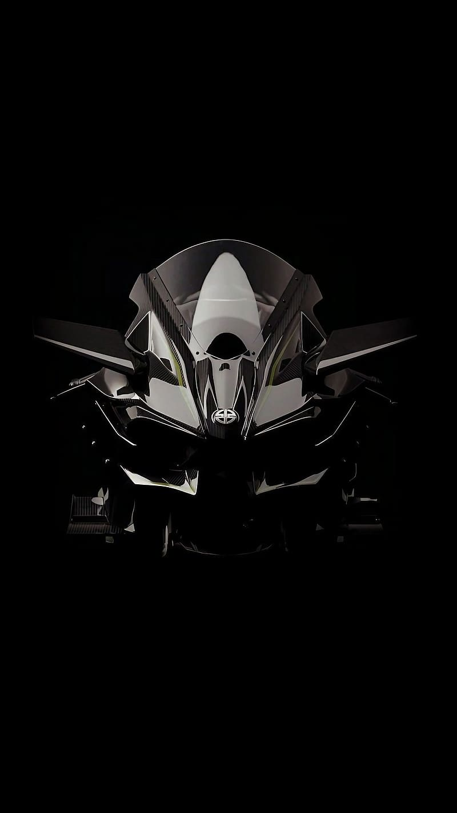
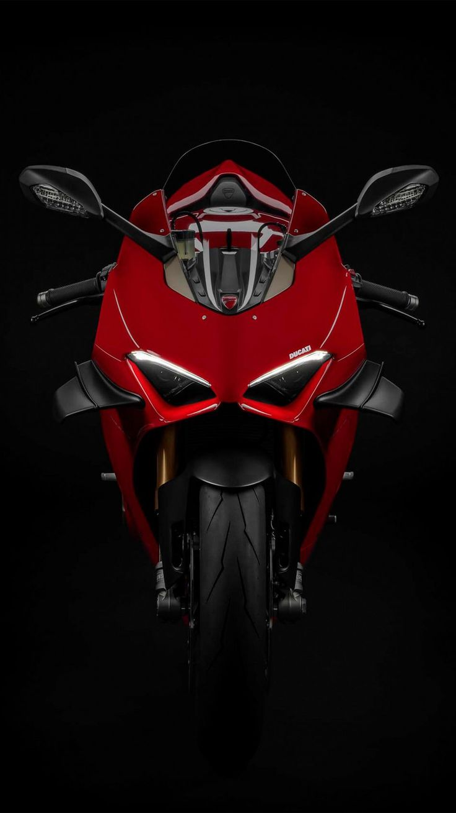
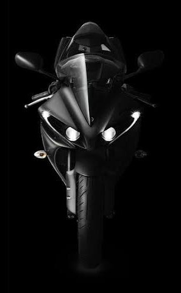
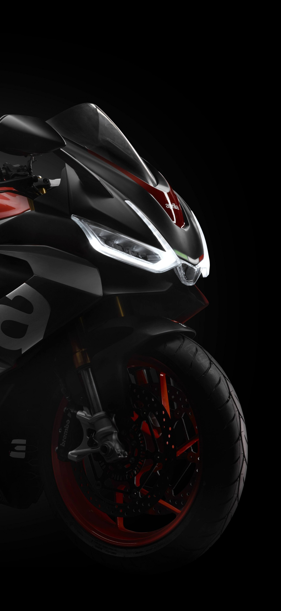

The Kawasaki Ninja H2R is a high-performance, track-only motorcycle known for its incredible speed and power. It is powered by a 998cc supercharged inline-four engine that delivers exceptional acceleration and top-end performance. Designed with advanced aerodynamics, lightweight materials, and cutting-edge technology, the Ninja H2R is considered one of the most powerful production motorcycles ever built. Since it is intended exclusively for racing circuits, it is not street legal.

The Ducati V4R is a high-performance superbike designed for both racing and track enthusiasts. Powered by a 998cc V4 engine, it delivers exceptional power, speed, and handling inspired by Ducati’s MotoGP technology. The motorcycle features advanced aerodynamics, lightweight construction, and sophisticated electronic rider aids that enhance performance and control. Built to meet World Superbike racing regulations, the Ducati V4R is one of the most powerful and technologically advanced motorcycles in Ducati’s lineup.

The Yamaha YZF-R1 is a legendary superbike renowned for its race-inspired performance and advanced technology. Powered by a 998cc inline-four engine with a crossplane crankshaft, it delivers strong acceleration, precise throttle response, and an exciting riding experience. The R1 features aerodynamic bodywork, lightweight construction, and advanced electronic systems such as traction control, launch control, and multiple riding modes. Combining speed, agility, and cutting-edge engineering, the Yamaha R1 remains one of the most popular high-performance motorcycles in the world.

The Aprilia RSV4 is a premium superbike known for its outstanding performance, sharp handling, and advanced racing technology. Powered by a high-revving V4 engine, it delivers impressive power, acceleration, and precision on both the road and the track. The motorcycle features aerodynamic styling, a lightweight chassis, and a comprehensive suite of electronic rider aids, including traction control, wheelie control, and multiple riding modes. With its blend of Italian design and race-proven engineering, the Aprilia RSV4 is regarded as one of the finest superbikes in its class.